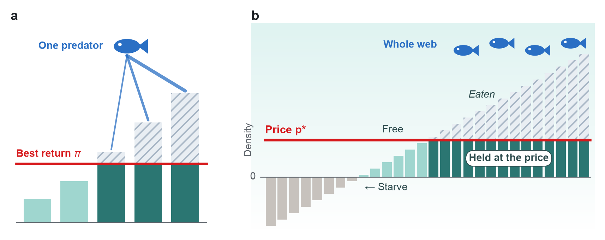
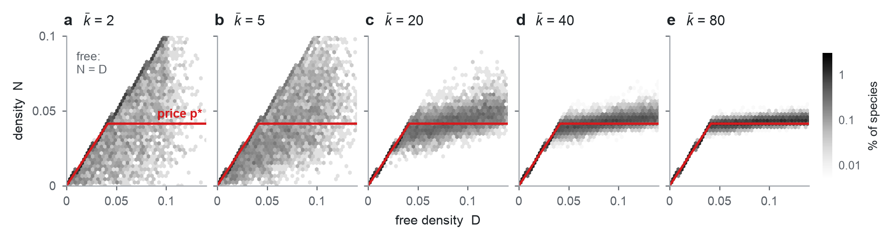

A price rule for species survival in adaptive food webs
Predators that switch between prey help large food webs keep their species. An adaptive predator holds each prey it eats at a price. At this density the prey is worth as much to the predator as its best alternative. So it cannot eat a prey to extinction while it has other prey left. From this we can predict how many species survive without running a simulation. When predators convert all they eat into growth, we prove that the speed of switching does not change which species survive. It changes only the route.
The question
Are complex ecosystems more stable than simple ones, or less? Random-network models, starting with May (1972), predict less. In these models, adding species and feeding links makes a community less likely to be stable. Real ecosystems are very complex, however, and they persist.
Kondoh (2003) proposed an explanation. Real predators shift their foraging effort towards whichever prey currently gives the best return, a response known as adaptive foraging. In his simulations, more complex food webs were more likely to keep all their species when predators adapted in this way.
Theories of large communities have so far assumed that interaction strengths are fixed. With adaptive foraging they change with the densities of the species. We set out to explain which species survive when the interactions themselves adapt.
What we did
We built thousands of random food webs on a computer, from 5 to 1000 species. We ran each one two ways. In one, predators split their effort evenly and never change (fixed diets). In the other, predators adapt (adaptive diets). Then we looked at where each community ends up, and how it gets there.
Kondoh used an extinction line, a threshold below which a species is removed for good. Most food-web models use one. We ran the webs with and without it. Without the line, we count the species present at the end point, the state where the run settles (defined below).
We used two settings. In the self-sustaining setting, as in Kondoh's study, every species can grow on its own. In the prey-dependent setting, about half the species need prey to survive, as most predators do. We ran each setting at two conversion efficiencies, which gives four cases. The self-sustaining setting with Kondoh's own values is the original case.
The model in two equations
The model is Kondoh's. Each species i has a population density Ni, which changes as
Read the bracket left to right. A species grows at its own rate ri, is limited by crowding (−siNi), gains from what it eats and loses to what eats it. Here ri is the species' net growth rate on its own (births minus deaths). The self-limitation si sets how strongly it limits itself, so on its own it settles at ri/si. We set si = 1 for every species. In the self-sustaining setting every ri is positive. In the gain term, fij is the rate at which predator i captures prey j. The effort aij is the share of its foraging effort spent on j. The conversion efficiency e is the fraction of eaten food converted into new growth. The loss term is the same interaction seen from the prey's side, summed over its predators k.
The second equation is the adaptation rule:
Here fij Nj is the return of prey j to predator i, what it eats of j per unit of effort. The sum is the predator's intake, its average return over its whole diet. Its best return πi is the largest return among its prey. Effort on a prey grows if its return is above the predator's intake and shrinks if it is below. The adaptation rate G sets how fast. This is the replicator equation of evolutionary game theory (Hofbauer & Sigmund 1998), applied to each predator's diet. A fixed diet is aij = 1/ki, where ki is the number of potential prey of i, the species it is able to eat.
A single end point
An end point is a state that meets three conditions. Every species present has stopped changing. No predator can raise its intake by moving effort. And no absent species can invade. Here a species can invade if a few of its individuals, added to the web, would increase in number. The test describes the state only. The model has no immigration.
When predators convert all the food they eat into growth (e = 1), we prove that every web has a single end point. Every run approaches it, from any populations, any diets and any adaptation rate. The survivors and their densities are therefore set by the web itself. That means which species it contains, who can eat whom, and their growth and feeding rates.
The proof uses a Lyapunov function, a quantity that only ever decreases as the community changes. The system behaves like a ball rolling into a single valley. The construction extends Lyapunov functions that Boukal and Křivan (1999) built for small predator–prey models.
When predators convert less than all they eat (e < 1), the same calculation leaves one term that can push the wrong way. It comes from a predator above its end-point density while its prey is below, the classic predator–prey swing. Crowding damps that swing. Where crowding outweighs feeding, we prove that the end point is again unique and every run reaches it. We also prove it in special webs, such as webs whose potential links form a tree.
Our condition appears stricter than needed. We tested 360 webs of 50 and 100 species, each from four starts and at two adaptation rates. With feeding rates up to 1, as in Kondoh's setup, every web reached a single end point. That includes 40 webs where our condition fails. With feeding rates up to 3 and low efficiency (e = 0.15), 23 of 60 webs reached no end point under fast adaptation. In some, densities kept oscillating. In others, species kept falling to very low numbers and returning. One of these webs reached an end point under slower adaptation. In another, three starts reached the end point and the fourth kept oscillating. No web we tested reached end points with different survivors. A web of four species, however, has two end points.
The Lyapunov function
Starred values are those at the end point. The first sum is the standard Lyapunov function for Lotka–Volterra communities (Volterra 1931; Goh 1977). It is smallest when every population is at its end value. The second sum is the Kullback–Leibler divergence between each predator's diet and its end-point diet. This is the standard Lyapunov function for replicator dynamics (Hofbauer & Sigmund 1998), here weighted by the predator's end-point density and by 1/G. When e = 1, what a predator gains in each interaction exactly matches what its prey loses. The cross terms cancel, and V can only decrease. Every trajectory therefore ends at the same point.
Flexible diets keep more species
In the original case, the typical (median) adaptive web keeps 96 percent of its species when each species has 2 potential prey. From 5 potential prey upwards it keeps all of them. Fixed-diet webs lose about 15 percent of their species. The few species that adaptive webs lose are prey of a predator with no other prey left, which cannot switch away.
In the prey-dependent setting with e = 1, fixed-diet webs keep about half of their species, however many links they have. Adaptive webs keep 56 percent when each species has 2 potential prey. This rises to about 71 percent by 14 to 20 potential prey, and then levels off.
In the original case with fast adaptation, the share of webs whose end point keeps every species rises with connectance. In webs of 20 species it rose from 23 percent at the lowest connectance to 93 percent at the highest. In webs of 100 species it rose from 41 to 94 percent.
Adaptive predators hold their prey at a price
Why do adaptive webs keep more species? Look at what happens to a prey as it becomes rare.
With a fixed diet, a predator keeps the same share of its effort on a prey however rare it gets. Each prey individual faces the same risk of being eaten. If its predators are common, the prey keeps declining all the way to zero.
An adaptive predator only feeds on a prey while it pays at least as well as its other options. As the prey becomes rare it pays less, and the predator moves its effort elsewhere. The pressure on a rare prey therefore falls away, as long as the predator has other prey left. A predator with nothing else to eat keeps its effort on the prey and can still eat it out.
At the end point this becomes an exact rule. Each prey that is eaten is held at a price. This is the density at which the prey is worth exactly as much to a predator as that predator's best return. With several predators, the lowest of these prices applies:
Here πk is predator k's best return, and fkj is the rate at which it catches j. Dj is the prey's free density. That is the density at which it would be at rest, with all its own effort on its best prey and no predators. The subscript + means that a negative Dj counts as zero. A prey that no predator eats is free and stands at its free density. The rule follows from the end-point conditions alone, with no approximation.
The price is above zero whenever the predator has a positive best return. So an adaptive predator cannot eat a prey to extinction while it has other prey left. Species are lost in only two ways. A species that needs prey can starve, because it cannot get enough food. Or it is kept out by a predator that has no prey left. In our simulated end points, the rule holds to better than one part in a billion. This is true for 99 percent of the 110 000 species present. This checks our code and the precision of the end points, since the rule itself is proved.

Speed changes the route
The adaptation rate G does not appear in the price rule. When predators convert all they eat (e = 1), we prove that speed changes only the route to the end point. In the original case we checked this in simulation. Of 3000 webs of 5 to 20 species, 2984 reached an end point at two or more speeds. Each of them kept the same number of species at every speed.
What speed changes is the route. Slow adapters keep feeding on a declining prey for too long. The prey can then crash to very low numbers before predators move on, and only then recover.
When predators convert all they eat, the Lyapunov function V also sets a floor under every species present at the end point. Since V never increases, a species cannot fall further than the starting value of V allows. The diet term of V is divided by G, so the floor sinks in proportion to 1/G. The floor is loose, and the typical crash is far shallower. The deepest crashes, however, grow as adaptation slows. In one run in ten, the deepest crash goes beyond about 2 powers of ten under fast adaptation. Under adaptation a thousand times slower it goes beyond about 180.
Adaptation speed matters through the extinction line
A real population that fell to one part in 10275 would be extinct. Models represent this with an extinction line, and that is where adaptation speed matters. We reran Kondoh's protocol in the original case. We used 3000 random and hierarchical (cascade) webs of 5 to 20 species. His line removes a species for good once it falls below 10−13.
With the line, the share of webs that kept every species rose with adaptation speed, as Kondoh reported. It rose from 28 percent under slow adaptation to 72 percent under fast. Without it, we count the species present where each run ends. About 73 percent of adaptive webs then keep every species, at every speed. The difference comes mainly from transient extinctions. These are species removed on the route that the end point would keep. Fixed-diet webs keep every species in about 26 percent of webs either way.
So the extinction line and the end point measure different things. The line asks whether every species survives the whole journey. The end point says where the journey finishes. A population at 10−13 would be lost in practice, so a safe route is part of persistence. In this sense the two measures are complementary.
Adapted diets get narrow
At the end point, each adaptive predator puts its effort only on the prey that give its best return. It therefore uses only part of its potential prey, as Kondoh (2003) observed. In the web below, 19 of the 20 predators eat only one or two of the species they could eat. The interactions in use are set by the dynamics of the web.
Predicting the end point without simulating it
A web that settles has one end point, set by the web itself. So it should be possible to calculate that end point from a few summary statistics. We built such a calculation using the cavity method. The method comes from the physics of disordered systems such as spin glasses (Mézard & Parisi 2001). It has been used for random communities whose interactions are fixed (Bunin 2017; Barbier et al. 2018). It has also been applied to multi-trophic consumer–resource models (Feng et al. 2024). Adaptive diets needed a new version, because the strength of each link responds to the densities.
The idea is to solve one species at a time, as if it had just been added to a web that has already settled. Its neighbours tell it two things. A predator tells it how hard it would eat this prey at each possible prey density. A prey tells it how much eating it would take to hold that prey at each density. This allows for the prey's other predators easing off. The species then settles its own density and diet, and passes the same kind of message on. Repeated over a large pool of species, this gives the whole distribution of end points. The one approximation is to ignore loops of potential links.
Nothing in the calculation is fitted to the simulations. We compared it with 640 simulated webs of 50 to 500 species, in the four cases with up to 20 potential prey. It predicts the share of species that survive to within 1.3 percentage points. It predicts mean densities and mean best returns to within 3 percent, and the full spread of densities across species. For fixed diets we use the existing cavity theory for random communities with fixed interactions. It is approximate for sparse webs, and close to the simulations in all four cases. So the gain from adaptation can be calculated too.
Show the numbers
Complexity and stability in one line
As each species gets more potential prey, the calculation simplifies to a single equation. Every predator finds prey it catches efficiently. We argue that all predators then end up with the same best return, a single price p*. This step is heuristic, and we test it in simulation. A species' density is then the lower of its free density, D = r + e p*, and the price. The price is fixed by a balance. Summed over the web, the load that predators put on their prey equals the total density. That balance reads
where E is an average over species and the subscript + means "only where positive". In words, predation holds the total density at half the total free density. Within this limit the consequences follow exactly.
The share of species that survive then follows. A species survives if it can live on prey at the going price, r + e p* > 0. In the prey-dependent setting with e = 1, adaptive webs keep 1/√2, about 71 percent. Fixed diets keep 50 percent at any number of links. Simulated webs of 1000 species keep 70.9 percent with 40 potential prey and 70.8 percent with 80, against 70.7.

This is the end-point form of Kondoh's result. More potential feeding links mean more survivors when diets adapt, until survival levels off. With fixed diets survival stays flat in three of the four cases. In the self-sustaining case at e = 1 it rises from 92 to 98 percent, but stays below adaptive diets.
The "half and half" comes from two of Kondoh's choices. The fastest feeding rate equals the strength of crowding (both 1). In general the eaten share is the fastest feeding rate divided by that rate plus crowding. With feeding rates up to 0.5 the predicted share is a third, and simulated webs came close (31 percent at 40 potential prey). A single price needs feeding rates that are bounded above and often come close to the bound. Our tests, with a spread of conversion efficiencies and with a smaller largest feeding rate, suggest that it needs nothing more.
The calculation also shows where adaptation matters most. When every species can live alone and conversion is efficient, fixed diets already keep almost every species, and the gain is small. The gain is largest, about 29 percentage points, when about 29 percent of species need prey. At e = 1 that share is exactly 1 − 1/√2. At low efficiency most of the gain comes from protecting prey, because a best return adds only eπ to a species' growth.
Hierarchical webs
Our random webs allow feeding loops, such as A eats B, B eats C and C eats A. In cascade webs (Cohen & Newman 1985), species are ranked and each can eat only species ranked below it. There the price rule still holds, and survival with adaptive diets still rises with the number of potential prey. Where species need prey, survival is lower than in random webs and rises more slowly. At 40 potential prey it is 66 percent, against 71 percent in random webs. The prices of held prey spread with rank and do not converge to one value. A version of the calculation that takes the ranks into account matches these webs.
What if predators get full?
Real predators cannot eat without limit. Each catch takes handling time, so intake levels off when prey are plentiful. At an end point, a full predator's intake still equals its best return. Handling time then scales everything about that predator by one factor, and it ranks its prey the same way. So the price rule keeps its form. We expect the calculation to carry over, with one such factor per predator.
Saturation caps what a predator can gain, so we expect fewer of the species that need prey to survive. Saturation can also stop a web from reaching an end point. Our proofs of a single end point assume linear feeding.
What about rewiring?
Our wider project also studies rewiring, in which a predator that loses its prey adds a new species to its diet (Gilljam et al. 2015). Does rewiring break the one-valley picture?
Adaptive predators already drop links, by putting no effort into them, and can take them up again later. At e = 1 the web still has a single end point. We expect history dependence to come from how choices are made. Continuous adaptation keeps every option open and keeps revising. Rewiring makes a one-off choice when a trigger fires, and keeps it. The web then retains a memory of the order in which events happened, so different runs could end differently. An extinction line has the same effect, because a species removed during a crash never returns.
Why it matters
- It separates two effects in Kondoh's result. Adaptation changes where a food web ends up, and more species survive at the end point. At e = 1 we prove that speed does not change the end point, and in the original case our simulations agree. Speed changes how the web gets there. Slow switching can drive species through deep crashes on the way, and in a real population such crashes can be permanent losses. Persistence depends on both the end point and the route.
- Because the end point is set by the web, it can be calculated from a few summary statistics of the web, without simulation. The price rule explains why adaptive diets keep more species. With many potential prey, the calculation gives survival in closed form.
- The price rule makes predictions that could be tested in the field. Every prey that an adaptive predator eats gives it the same return. Across one predator's diet, prey densities should therefore be inversely proportional to its feeding rates on them.
What we haven't shown yet
- Real predators get full. We argue that the price rule survives this, but we have not yet tested survival with handling time.
- Our main theory is for random webs. In hierarchical (cascade) webs, a version of the calculation that takes ranks into account matches simulations. Body sizes and other trophic structure are not yet included.
- The single end point is proven for all webs only when predators convert all they eat (e = 1). At lower efficiency we prove it when crowding outweighs feeding, and in special webs such as those whose potential links form a tree. Elsewhere we test it in simulation.
- Every consumer adapts in our webs. Kondoh also studied webs in which only some consumers adapt. A predator with a fixed diet keeps its effort on a prey as the prey becomes rare. We therefore expect its prey to lose the protection of prices.
References
- Barbier, M., Arnoldi, J.-F., Bunin, G. & Loreau, M. (2018). Generic assembly patterns in complex ecological communities. PNAS 115, 2156–2161.
- Boukal, D. S. & Křivan, V. (1999). Lyapunov functions for Lotka–Volterra predator–prey models with optimal foraging behavior. Journal of Mathematical Biology 39, 493–517.
- Bunin, G. (2017). Ecological communities with Lotka–Volterra dynamics. Physical Review E 95, 042414.
- Cohen, J. E. & Newman, C. M. (1985). A stochastic theory of community food webs I. Models and aggregated data. Proceedings of the Royal Society B 224, 421–448.
- Feng, Z., Marsland, R., Rocks, J. W. & Mehta, P. (2024). Emergent competition shapes top-down versus bottom-up control in multi-trophic ecosystems. PLoS Computational Biology 20, e1011675.
- Gilljam, D., Curtsdotter, A. & Ebenman, B. (2015). Adaptive rewiring aggravates the effects of species loss in ecosystems. Nature Communications 6, 8412.
- Goh, B. S. (1977). Global stability in many-species systems. American Naturalist 111, 135–143.
- Hofbauer, J. & Sigmund, K. (1998). Evolutionary Games and Population Dynamics. Cambridge University Press.
- Kondoh, M. (2003). Foraging adaptation and the relationship between food-web complexity and stability. Science 299, 1388–1391.
- May, R. M. (1972). Will a large complex system be stable? Nature 238, 413–414.
- Mézard, M. & Parisi, G. (2001). The Bethe lattice spin glass revisited. European Physical Journal B 20, 217–233.
- Volterra, V. (1931). Leçons sur la théorie mathématique de la lutte pour la vie. Gauthier-Villars, Paris.